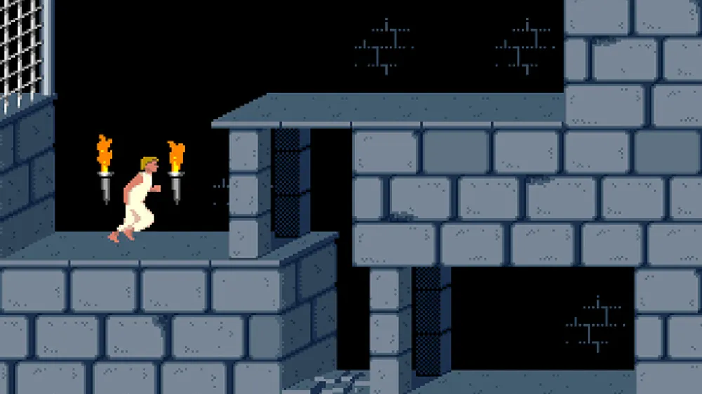

Gaming with friends is something I enjoy a lot. We are a group of 4-5 players who like various type of games, from miniatures to boardgames and card games, but also medieval or futuristic RPG like "Shadowrun".
My favourite game settled in a dystopic future is the card game Android : Netrunner. It is a very subtle mix between Poker, Chess and fair amount of ressources management.
It all started with this... I was "infected" by the Virus in 1989 and never recovered ^^
Still one of my favourite hobby when I am given time, which has become sparse over time. It's always a pleasure to discover new productions, like the really good Baldur's Gate III (made in Belgium, cocoricooo !! ^^ )